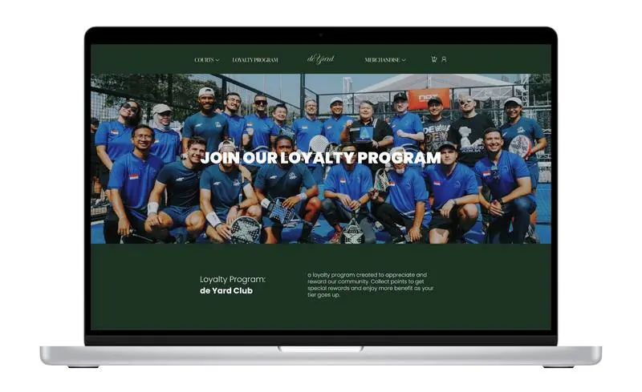
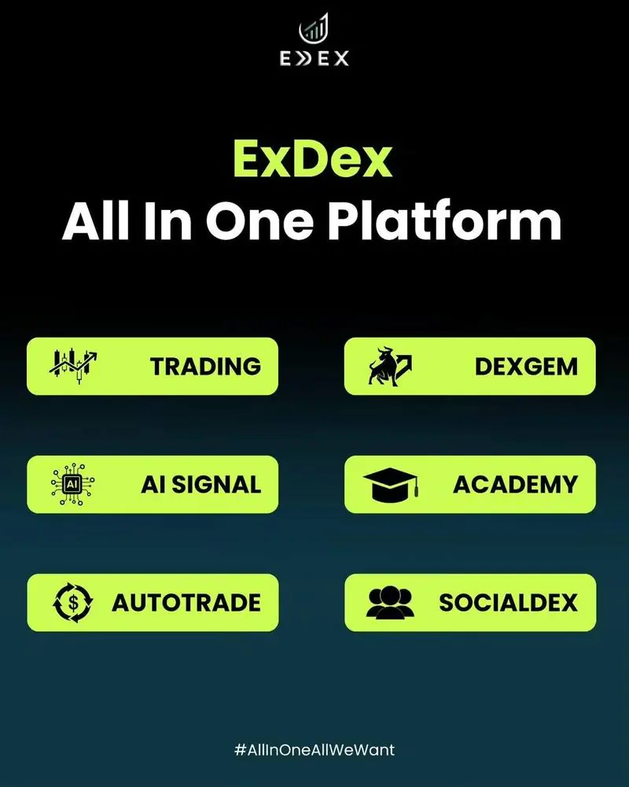
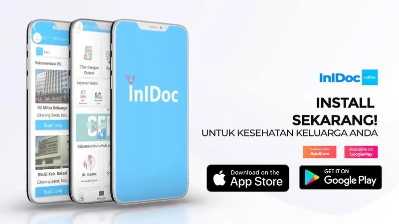
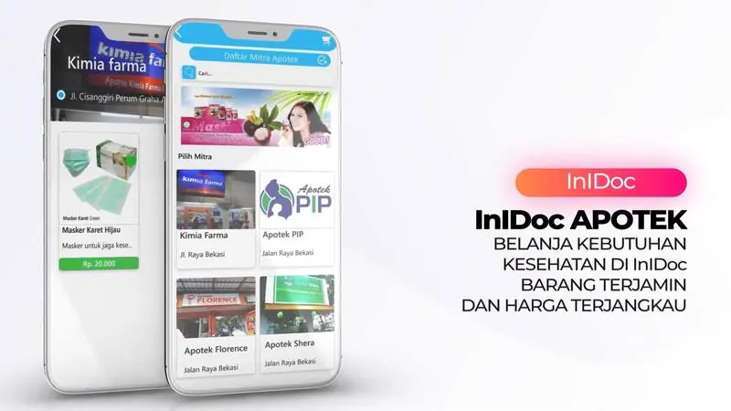
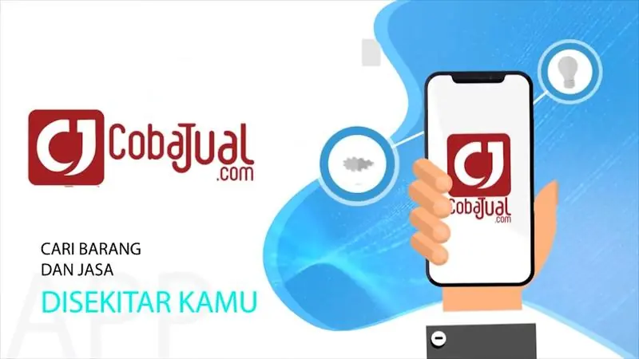
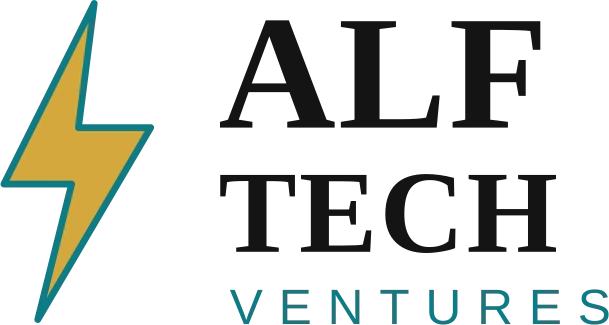
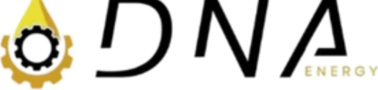
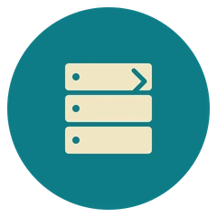

Merekayasa fondasi digital yang presisi.
Rekaloka membangun data center, cloud, sistem digital, hingga keamanan siber untuk perusahaan yang serius menata fondasi teknologinya — bukan sekadar mengejar tren.
Dibangun dengan teknologi yang teruji
Ringkasan
Rekaloka adalah perusahaan teknologi yang fokus mengembangkan solusi rekayasa digital dan infrastruktur data modern. Berangkat dari semangat inovasi dan efisiensi, kami menghadirkan layanan terintegrasi di bidang data center, cloud infrastructure, sistem digital, serta konsultasi teknologi informasi.
Dengan memadukan rekayasa sistem yang presisi dan pemahaman mendalam terhadap kebutuhan digital bisnis, kami berkomitmen menjadi mitra strategis dalam membangun fondasi teknologi yang andal, aman, dan scalable bagi klien di berbagai sektor.
Kenapa Rekaloka
Tiga hal yang kami pegang di setiap proyek, besar maupun kecil.
Rekayasa presisi, bukan template
Setiap sistem dirancang dari kebutuhan bisnis yang sebenarnya, bukan dipaksakan dari cetakan yang sama untuk semua klien.
Solusi end-to-end
Dari sistem digital, cloud, data, sampai keamanan siber — satu mitra untuk seluruh fondasi teknologi Anda.
Disesuaikan, bukan digeneralisasi
Pendekatan customized solution: layanan disesuaikan dengan kondisi dan skala kebutuhan tiap klien.
Layanan
Empat pilar yang saling terhubung — dari membangun sistem sampai menjaganya tetap aman.
Software & Mobile Apps
Pengembangan perangkat lunak berbasis web dan aplikasi Android/iOS, dirancang mengikuti alur kerja bisnis Anda — bukan template siap pakai.
IT Infrastructure
Penyediaan dan instalasi infrastruktur IT — jaringan, server, hingga sistem yang siap diskalakan seiring pertumbuhan bisnis.
Data Analytics
Layanan analisis data dan survei berbasis integrasi teknologi, membantu keputusan bisnis yang lebih terukur.
Cyber Security & Data Protection
Pengembangan perangkat keamanan siber dan perlindungan data menyeluruh untuk menjaga sistem dari ancaman digital.
Produk & Prototipe
Sebagian solusi digital yang sedang kami rancang dan kembangkan bersama mitra.

De Yard Club
Super-app untuk klub padel di Jakarta: sistem reservasi lapangan, game management system, dan loyalty program dalam satu platform — untuk pengguna maupun pemilik lapangan.

Exdex
Platform trading digital bertenaga AI yang menganalisis pasar secara real-time dan tetap bekerja meski pengguna tidak aktif memantau layar.
Pro Expo
Aplikasi jual-beli properti dengan pencarian dan transaksi yang aman, lengkap dengan simulasi cicilan dan pengajuan KPR langsung dari aplikasi.

IniDoc
Aplikasi kesehatan berbasis Android dan iOS untuk konsultasi online lewat chat maupun video call, lengkap dengan booking jadwal dokter.

Klik IniDoc
Perluasan dari IniDoc yang fokus pada kebutuhan medis sehari-hari: belanja obat, pemesanan ambulans darurat, dan reservasi fasilitas kesehatan.

Coba Jual
Marketplace berbasis lokasi berbasis Android yang menghubungkan penjual dan pembeli barang maupun jasa di sekitar mereka.
Kemitraan Strategis
Untuk proyek berskala enterprise, Rekaloka berkolaborasi dengan ALF TECH Ventures — bagian dari DNA Group — menggabungkan kapasitas tim untuk menangani klien korporasi.

×
Mitra strategis — DNA Group
Sinarmas Mining Group
Optimasi query & indexing database, caching layer (Redis), load balancing, serta tuning arsitektur API untuk sistem procurement skala korporasi.
Bimbel Sinar Prestasi
LMS lengkap dengan simulasi ujian berbasis Computer Assisted Test (CAT), manajemen materi belajar, dan dashboard pemantauan progres siswa.
Smartwatch BMS Tampil di HUT TNI 2026
Rekaloka memperkenalkan Smartwatch BMS (Battle Management System) di booth Litbang Kopassus — bagian dari RND 75, Anevlitbang Sren Kopassus 2026. Produk ini menghadirkan ekosistem pemantauan personel, komunikasi taktis, command center, dan tactical awareness secara real-time.
GPS Tracking
Pelacakan lokasi personel secara real-time.
Command Center & Tactical Watch
Pemantauan lapangan dalam satu dashboard.
Push-to-Talk
Komunikasi langsung antar personel di lapangan.
SOS Alert
Sinyal darurat instan dari perangkat ke command center.
Heartbeat & Status Device
Status konektivitas dan kondisi perangkat real-time.
Target Titik & Route Live
Penanda titik target dan pelacakan rute pergerakan.
Tren Industri
Perusahaan masa kini menghadapi tantangan besar dalam mengelola data, menjaga keamanan informasi, dan memastikan infrastruktur teknologi tetap tangguh dan efisien.
Tren global menunjukkan peningkatan kebutuhan terhadap cloud adoption, pengambilan keputusan berbasis data, serta proteksi keamanan siber yang lebih canggih — didorong oleh perkembangan AI, IoT, dan big data analytics.
Target Audiens
Kami bekerja dengan organisasi yang menganggap serius fondasi teknologinya.
Korporasi & Enterprise
Membutuhkan sistem data center, cloud, serta proteksi keamanan tingkat tinggi.
Pemerintah & Institusi Publik
Fokus pada efisiensi layanan digital dan keamanan data masyarakat.
Startup & UKM Digital
Memerlukan solusi sistem dan aplikasi yang agile, scalable, dan hemat biaya.
Pendidikan, Kesehatan & Keuangan
Mengutamakan layanan digital berbasis data serta infrastruktur yang stabil dan aman.
Solusi yang Kami Tawarkan
Rekaloka menawarkan solusi yang terintegrasi dan end-to-end.
- 01Pengembangan sistem digital & aplikasi mobile untuk mendukung kebutuhan operasional dan interaksi pengguna.
- 02Data analytics & integrasi teknologi untuk membantu organisasi mengambil keputusan berbasis data.
- 03IT infrastructure & cloud system yang dirancang presisi untuk kinerja yang scalable dan reliable.
- 04Cyber security & data protection untuk memastikan data dan sistem tetap aman dari ancaman digital.
Rekaloka memastikan setiap layanan disesuaikan dengan kebutuhan unik tiap klien — bukan solusi generik yang dipaksakan cocok untuk semua orang.
Proses Kerja
Tiga tahap yang memastikan setiap solusi benar-benar cocok dengan kondisi lapangan.
Discovery & Assessment
Memahami kebutuhan bisnis dan kondisi infrastruktur yang sudah ada.
Design & Planning
Merancang solusi teknologi yang tepat guna dan scalable, termasuk penerapan sistem, aplikasi, atau infrastruktur sesuai standar terbaik.
Testing & Optimization
Memastikan performa optimal lewat pengujian menyeluruh dan dukungan berkelanjutan agar sistem tetap aman dan efisien.
Yang Anda Dapatkan
Setiap proyek menghasilkan output yang jelas, terukur, dan memberi dampak nyata.
Custom-Built Digital Solutions
Aplikasi mobile, sistem web, dan software yang dirancang sesuai kebutuhan spesifik bisnis.
Infrastructure Deployment
Implementasi data center, cloud system, dan jaringan IT yang scalable, reliable, dan secure.
Data Insights & Reports
Analisis data komprehensif yang dapat langsung digunakan sebagai dasar pengambilan keputusan strategis.
Cybersecurity Framework
Sistem proteksi data dan keamanan siber yang siap menghadapi ancaman digital.
Documentation & Training
Panduan teknis dan knowledge transfer agar tim klien mampu mengoperasikan sistem secara mandiri.
Ongoing Support
Layanan pemeliharaan, monitoring, dan optimalisasi agar solusi tetap berjalan stabil.
Mari bangun fondasi digital yang presisi.
Ceritakan kebutuhan Anda — tim Rekaloka akan membantu merancang solusi yang sesuai dengan kondisi lapangan Anda.
Ulasan Pengguna
Beri penilaian dan masukan Anda tentang layanan Rekaloka.